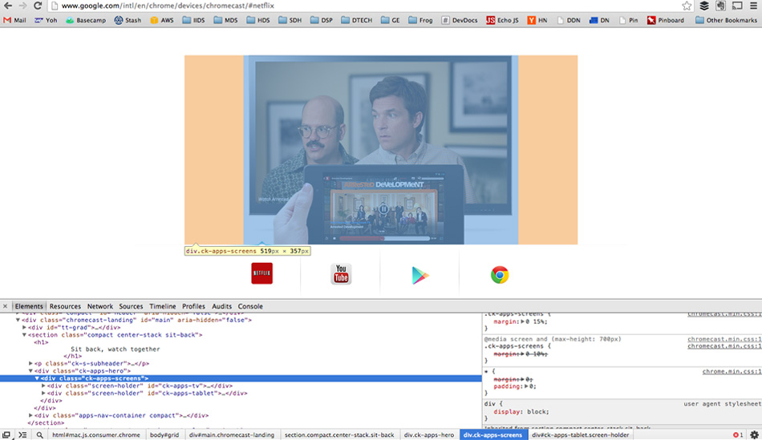

Earn Your Coder Stripes
A guide to becoming a self-educated developer
Work Fast
Keep a code sketchbook
github.com/robdodson/sketchbook

Codepen

Learn jQuery first!
You will pickup pure JavaScript along the way.
jQuery Fundamentals

Learn your dev tools
Chrome Dev Tools
Chrome Dev Tools Docs

Fixing jQuery

Be Social
Write. Constantly.
This is probably the most important slide in here.
Coderwall

The Recipe's Twitter List

Github Help

Git Book